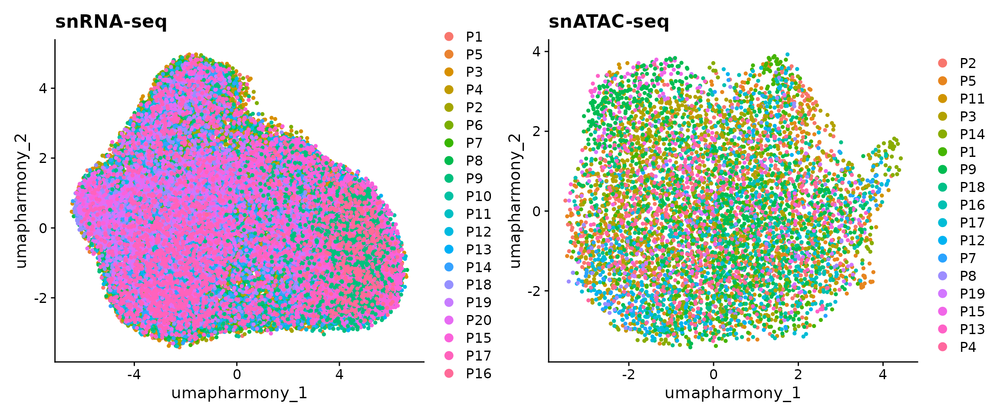

GRN-fibroblast.RmdDuring this tutorial, we will be analyzing the snRNA-seq and snATAC-seq generated from human hearts after myocardial infarction to understand the gene regulatory dynamics for myofibroblast differentiation. More specifically, we will:
We first download all the required data. In this case, we need two Seurat objects with each one corresponding to snRNA-seq and snATAC-seq respectively. The snRNA-seq object includes gene expression data of all fibroblasts and snRNA-seq includes all chromatin accessibility data. Additionally, we also need a gene activity matrix for data integration. This matrix was estimated from the snATAC-seq data by using ArchR package. The script of cleaning the data and preparing these objects is found here.
Run the following commands to download the data:
wget https://www.dropbox.com/s/6v98iiq8dtlcjho/snRNA.rds
wget https://www.dropbox.com/s/h30ej52burtsgdy/snATAC.rds
wget https://www.dropbox.com/s/7uc2ad0jcrzks20/gene.activity.rdsNext, we load all necessary packages:
suppressMessages(library(Seurat))
suppressMessages(library(Signac))
suppressMessages(library(scMEGA))
suppressMessages(library(BSgenome.Hsapiens.UCSC.hg38))
suppressMessages(library(JASPAR2020))
suppressMessages(library(TFBSTools))
suppressMessages(library(ggplot2))Let’s load the data into memory and see how they look like
## An object of class Seurat
## 28933 features across 45515 samples within 1 assay
## Active assay: RNA (28933 features, 2000 variable features)
## 4 dimensional reductions calculated: pca, harmony, umap, umap_harmony
obj.atac## An object of class Seurat
## 173843 features across 6481 samples within 1 assay
## Active assay: ATAC (173843 features, 0 variable features)
## 3 dimensional reductions calculated: harmony, umap, umap_harmonyWe can observe that there are 45,515 and 6,481 cells in our snRNA-seq and snATAC-seq datasets. We now visualize the data as colored by patients. Note that here we used the UMAP embedding generated from batch-corrected low-dimensional space so that no batch effects are observed from the 2D visualization.
p1 <- DimPlot(obj.rna, pt.size = 1, reduction = "umap_harmony") +
ggtitle("snRNA-seq")
p2 <- DimPlot(obj.atac, pt.size = 1, reduction = "umap_harmony") +
ggtitle("snATAC-seq")
p1 + p2
In this step, we match the cells between these two modalities. In other words, for each cell in, for example, snATAC-seq, we will find a cell from snRNA-seq data so that these two cells have the similar profiles.
First, we need to project the data into a common low-dimensional space. This is done by using the CCA method from Seurat. More specifically, we wrapped several functions from Seurat into a single function CoembedData.
# Check session information
sessionInfo()## R version 4.1.1 (2021-08-10)
## Platform: x86_64-conda-linux-gnu (64-bit)
## Running under: Rocky Linux 8.5 (Green Obsidian)
##
## Matrix products: default
## BLAS/LAPACK: /home/rs619065/miniconda3/envs/r-4.1/lib/libopenblasp-r0.3.18.so
##
## locale:
## [1] LC_CTYPE=en_US.UTF-8 LC_NUMERIC=C
## [3] LC_TIME=en_US.UTF-8 LC_COLLATE=en_US.UTF-8
## [5] LC_MONETARY=en_US.UTF-8 LC_MESSAGES=en_US.UTF-8
## [7] LC_PAPER=en_US.UTF-8 LC_NAME=C
## [9] LC_ADDRESS=C LC_TELEPHONE=C
## [11] LC_MEASUREMENT=en_US.UTF-8 LC_IDENTIFICATION=C
##
## attached base packages:
## [1] stats4 stats graphics grDevices utils datasets methods
## [8] base
##
## other attached packages:
## [1] ggplot2_3.3.6 TFBSTools_1.32.0
## [3] JASPAR2020_0.99.10 BSgenome.Hsapiens.UCSC.hg38_1.4.4
## [5] BSgenome_1.62.0 rtracklayer_1.54.0
## [7] Biostrings_2.62.0 XVector_0.34.0
## [9] GenomicRanges_1.46.1 GenomeInfoDb_1.30.1
## [11] IRanges_2.28.0 S4Vectors_0.32.4
## [13] BiocGenerics_0.40.0 scMEGA_0.1.0
## [15] Signac_1.6.0 sp_1.4-7
## [17] SeuratObject_4.1.0 Seurat_4.1.1
##
## loaded via a namespace (and not attached):
## [1] SnowballC_0.7.0 scattermore_0.8
## [3] ggthemes_4.2.4 R.methodsS3_1.8.1
## [5] ragg_1.2.2 tidyr_1.2.0
## [7] bit64_4.0.5 knitr_1.39
## [9] R.utils_2.11.0 irlba_2.3.5
## [11] DelayedArray_0.20.0 data.table_1.14.2
## [13] rpart_4.1.16 KEGGREST_1.34.0
## [15] RCurl_1.98-1.6 generics_0.1.2
## [17] cowplot_1.1.1 RSQLite_2.2.10
## [19] RANN_2.6.1 proxy_0.4-26
## [21] future_1.25.0 tzdb_0.2.0
## [23] bit_4.0.4 spatstat.data_2.2-0
## [25] httpuv_1.6.5 SummarizedExperiment_1.24.0
## [27] assertthat_0.2.1 DirichletMultinomial_1.36.0
## [29] xfun_0.31 hms_1.1.1
## [31] jquerylib_0.1.4 evaluate_0.15
## [33] promises_1.2.0.1 DEoptimR_1.0-11
## [35] fansi_1.0.3 restfulr_0.0.13
## [37] caTools_1.18.2 igraph_1.3.1
## [39] DBI_1.1.2 htmlwidgets_1.5.4
## [41] sparsesvd_0.2 spatstat.geom_2.4-0
## [43] purrr_0.3.4 ellipsis_0.3.2
## [45] RSpectra_0.16-1 dplyr_1.0.9
## [47] annotate_1.72.0 deldir_1.0-6
## [49] MatrixGenerics_1.6.0 vctrs_0.4.1
## [51] SingleCellExperiment_1.16.0 Biobase_2.54.0
## [53] TTR_0.24.3 ROCR_1.0-11
## [55] abind_1.4-5 withr_2.5.0
## [57] cachem_1.0.6 RcppEigen_0.3.3.9.2
## [59] ggforce_0.3.3 robustbase_0.95-0
## [61] progressr_0.10.0 vcd_1.4-9
## [63] sctransform_0.3.3 GenomicAlignments_1.30.0
## [65] xts_0.12.1 goftest_1.2-3
## [67] cluster_2.1.2 lazyeval_0.2.2
## [69] seqLogo_1.60.0 laeken_0.5.2
## [71] crayon_1.5.1 labeling_0.4.2
## [73] pkgconfig_2.0.3 slam_0.1-50
## [75] tweenr_1.0.2 nlme_3.1-155
## [77] nnet_7.3-17 rlang_1.0.2
## [79] globals_0.15.0 lifecycle_1.0.1
## [81] miniUI_0.1.1.1 rprojroot_2.0.3
## [83] polyclip_1.10-0 RcppHNSW_0.3.0
## [85] matrixStats_0.62.0 lmtest_0.9-40
## [87] Matrix_1.4-0 ggseqlogo_0.1
## [89] carData_3.0-5 boot_1.3-28
## [91] zoo_1.8-10 ggridges_0.5.3
## [93] png_0.1-7 viridisLite_0.4.0
## [95] rjson_0.2.21 bitops_1.0-7
## [97] R.oo_1.24.0 KernSmooth_2.23-20
## [99] blob_1.2.2 stringr_1.4.0
## [101] parallelly_1.31.1 spatstat.random_2.2-0
## [103] readr_2.1.2 CNEr_1.30.0
## [105] scales_1.2.0 memoise_2.0.1
## [107] magrittr_2.0.3 plyr_1.8.7
## [109] hexbin_1.28.2 ica_1.0-2
## [111] zlibbioc_1.40.0 compiler_4.1.1
## [113] BiocIO_1.4.0 RColorBrewer_1.1-3
## [115] pcaMethods_1.86.0 fitdistrplus_1.1-8
## [117] Rsamtools_2.10.0 cli_3.3.0
## [119] listenv_0.8.0 patchwork_1.1.1
## [121] pbapply_1.5-0 ggplot.multistats_1.0.0
## [123] MASS_7.3-55 mgcv_1.8-39
## [125] tidyselect_1.1.2 stringi_1.7.6
## [127] textshaping_0.3.6 highr_0.9
## [129] yaml_2.3.5 ggrepel_0.9.1
## [131] grid_4.1.1 sass_0.4.1
## [133] fastmatch_1.1-3 tools_4.1.1
## [135] future.apply_1.9.0 parallel_4.1.1
## [137] TFMPvalue_0.0.8 lsa_0.73.3
## [139] gridExtra_2.3 smoother_1.1
## [141] scatterplot3d_0.3-41 farver_2.1.0
## [143] Rtsne_0.16 digest_0.6.29
## [145] rgeos_0.5-9 pracma_2.3.8
## [147] shiny_1.7.1 qlcMatrix_0.9.7
## [149] Rcpp_1.0.8.3 car_3.0-13
## [151] later_1.3.0 RcppAnnoy_0.0.19
## [153] AnnotationDbi_1.56.2 httr_1.4.3
## [155] colorspace_2.0-3 XML_3.99-0.9
## [157] fs_1.5.2 tensor_1.5
## [159] ranger_0.13.1 reticulate_1.24
## [161] splines_4.1.1 uwot_0.1.11
## [163] RcppRoll_0.3.0 spatstat.utils_2.3-1
## [165] pkgdown_2.0.3 plotly_4.10.0
## [167] systemfonts_1.0.4 xtable_1.8-4
## [169] poweRlaw_0.70.6 jsonlite_1.8.0
## [171] destiny_3.9.1 R6_2.5.1
## [173] pillar_1.7.0 htmltools_0.5.2
## [175] mime_0.12 glue_1.6.2
## [177] fastmap_1.1.0 VIM_6.1.1
## [179] BiocParallel_1.28.3 class_7.3-20
## [181] codetools_0.2-18 utf8_1.2.2
## [183] lattice_0.20-45 bslib_0.3.1
## [185] spatstat.sparse_2.1-1 tibble_3.1.7
## [187] curl_4.3.2 leiden_0.4.2
## [189] gtools_3.9.2 GO.db_3.14.0
## [191] survival_3.2-13 rmarkdown_2.11
## [193] docopt_0.7.1 desc_1.4.1
## [195] munsell_0.5.0 e1071_1.7-9
## [197] GenomeInfoDbData_1.2.7 reshape2_1.4.4
## [199] gtable_0.3.0 spatstat.core_2.4-2